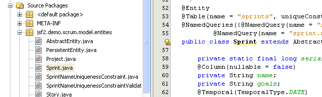
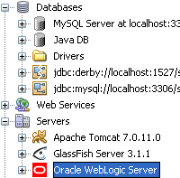

Click image for fullscreen preview
NetBeans IDE delivers excellent support for developing Web and server side applications that utilize the Java EE application framework. The IDE support has been developed in close cooperation with the Java EE and GlassFish teams to provide the tightest integration and easiest possible use of the Java EE specification. Concequently, if you are new to the Java EE specification and framework, using NetBeans IDE is the best way to quickly learn and become productive in Java EE programming.
NetBeans IDE provides complete support for
the latest Java EE 6 standards, including support for JSF 2.1 (Facelets),
Java Persistence 2.0 and Contexts and Dependency
Injection 1.0, as well as the Java EE 5, and J2EE 1.4 platforms.
The support provided in the IDE ranges from
wizards that can be used to quickly create the application,
editor support in generating Java EE artefacts and consuming them,
configuring the applications, and
build, deployment, execution and testing support.
With all of these capabilities, your efforts will be
focused on implementing the business logic aspects of your application.
Web application development
support in NetBeans
Getting Started with Java EE 6 Applications
The IDE supports EJB 3.1, including in web application projects.
The EJB project file wizard provides options for creating Session beans
including Singleton session beans,
Message Driven beans for processing asynchronous messages,
as well as Timer session beans for working with timed notifications.
You can use a wizard to easily create a Session Bean for an entity class including
the appropriate annotations and commonly used default methods.
Beans can be exposed with a local interface or a no-interface view. There is support
also for calling EJB beans using code-insertion wizards in the editor
Creating an Enterprise Application with EJB 3.1
Use the New Project wizard or new File wizard to create files
that are ready for Contexts and Dependency Injection (CDI). CDI allows
Java EE components such as servlets, enterprise beans, and JavaBeans to
exist within the lifecycle of an application with well-defined scopes.
Right-click any injection point to trigger Go To Injectables and
Inspect Injectables menu actions. Use the code completion and java doc help
support in the editor to easily annotate your code.
Getting started with CDI and JSF 2.0
Java Persistence |
Server Deployment |
Deploy on Save |
|
The IDE provides tools to work with the Java Persistence API 2.0. Wizards enable you to generate entity classes from a database, and a JavaServer Faces CRUD (Create Retrieve Update Delete) application from entity classes. The IDE supports all types of entity relationships (one-to-one, one-to-many, many-to-one, and many-to-many) and all types of primary keys (single-column, composite, and generated). The IDE also provides templates and graphic editors for creating and maintaining persistence units. The IDE now has a stand alone jpql editor where you can run your jpql from the ide directly. |
 |
The IDE instantly redeploys any running Java EE application when a change is
made to the project. Deploy on Save is available for web, EJB and EAR
applications, and supported for GlassFish 3.x, WebLogic and Tomcat
(directory-based deployment is prerequisite).
|
{kind=link}
{kind=link}
{kind=link}
{kind=link}